TaaS疼痛云平台
提升疼痛患者生活品质
退出
靖县安定门医院（全国疼痛分级诊疗云平台成员）
首页
发现
预约专家
我的
医院信息
我的消息
我的预约
账户设置
新增入院信息
1-入院诊断
2-入院治疗
信息采集时间：
2017年8月23日
2017.08.06
2017.10.17
新建
癌痛类型：
癌痛
癌痛类型：
慢性原发性疼痛
癌痛部位：
面额
酥麻
vas=5
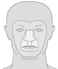
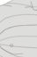 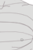 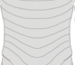 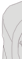 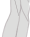 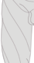 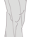 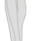 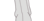 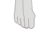 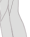 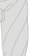 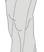 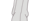 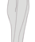
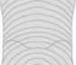 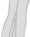 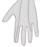 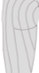 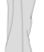 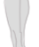 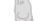 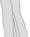 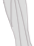 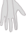 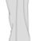 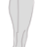 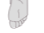
确认诊断：
治疗手段：
神经阻断法
其他
治疗效果：
不满意
满意
特别满意
服务效果：
不满意
满意
特别满意
基础疾病变化：
糖尿病
稳定
不稳定
住院期间是否有相关并发症：
药物
有
没有
治疗
有
没有
保存
放弃

 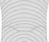
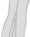
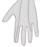
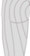
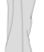
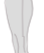
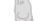
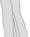
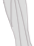
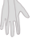
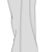
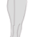
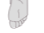
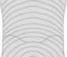
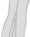
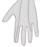
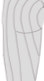
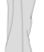
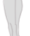
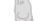
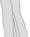
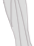
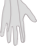
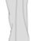
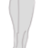
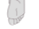